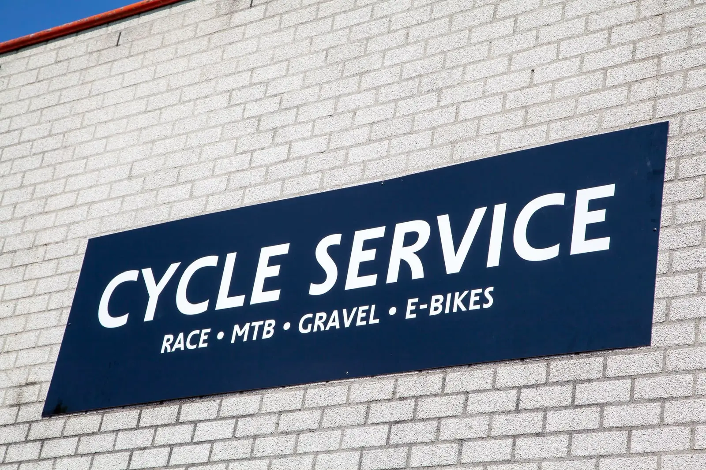

Handelsweg 11, Sint-Oedenrode
Loop binnen, bel, app of stuur een bericht. Voor een beurt gebruik je de planner, dan staat je plek meteen vast.
- AdresHandelsweg 11, 5492 NL Sint-Oedenrode
Route plannen - Telefoon06 28828966
- E-mailinfo@cycle-service.nl
Openingstijden
- Maandagop afspraak
- Dinsdag7.30-17.30
- Woensdag7.30-17.30
- Donderdagop afspraak
- Vrijdag7.30-20.00
- Zaterdag9.00-13.00
- Zondaggesloten
Van 26 september tot en met 10 oktober is de werkplaats gesloten.

Stuur Jay een bericht
Beschrijf wat er aan de hand is, dan krijg je binnen één werkdag antwoord van Jay zelf. Wil je een beurt inplannen? Dat gaat sneller via de planner.
Wat fietsers vaak vragen
Kan ik zonder afspraak binnenlopen?
Ja. Tijdens openingstijden ben je altijd welkom voor advies, een losse reparatie of om je fiets te brengen. Voor een beurt met een vaste plek in de agenda plan je online, dan weet je zeker dat Jay tijd voor je heeft.
Hoe werkt de haal- en brengservice?
Geef bij het plannen aan dat je fiets opgehaald mag worden. Jay belt je om een moment af te spreken, haalt de fiets thuis op en brengt hem na de beurt netjes terug.
Wat kost een beurt?
Controlebeurt race, MTB of gravel € 69 (75 minuten), onderhoudsbeurt € 159 (180 minuten), onderhoudsbeurt e-bike € 85 (90 minuten). Alle beurten zijn exclusief materiaal. Slijtagedelen vervangt Jay alleen na overleg.
Doet Cycle Service ook mijn merk?
Ja. Jay werkt aan alle merken racefietsen, mountainbikes, gravelbikes en e-bikes, ook als hij het merk zelf niet verkoopt. Alleen stads-, kinder- en bakfietsen doet hij niet.
Kan ik parkeren?
Ja, je parkeert gratis voor de deur aan de Handelsweg 11.
Wat als ik mijn afspraak wil verzetten?
Tot 24 uur vooraf verzet of annuleer je gratis. Bel of app 06 28828966, dan komt de plek vrij voor een andere fietser.